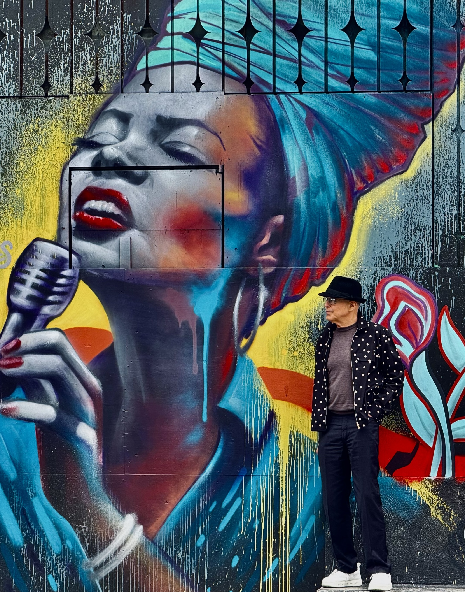

Musician · Songwriter · Writer
New album Love Moods II — Out Now

Alberto is a singer-songwriter and producer known for his soulful vocals, and a sound that moves fluidly between Blues, Jazz, and contemporary pop. Born and raised in San Francisco, he grew up surrounded by music — from his grandmother's vinyl collection to late-night sessions in the city's jazz clubs. He has performed in clubs throughout the world.
His debut album Love Moods introduced audiences to a voice both deeply personal and universally resonant. Thematic love moods ranging from searching, longing, passion, sadness, joy and loss.
With Love Moods II, Alberto pushes further, weaving orchestral arrangements with modern production to craft something timeless yet immediate. At the heart of it all is a simple passion: creating music that moves people.
Beyond music, Alberto is an award-winning screenwriter and poet whose creative vision extends across multiple mediums.
2026 · 10 Tracks
The follow-up to Love Moods, once again explores the theme of love, passion, and emotional depth through soulful cover songs from Abbey Lincoln, Cole Porter, Leon Russell, Keb Mo, Horace Silver, George Jackson, James Taylor, Dori Caymmi, Sammy Cahn and Bobby Troup — melodies and heartfelt lyrics. Songs that Alberto loves and arranges to maximize the amazing musicians' skills of Andrea Claburn's vocals, Scott Foster's guitar, Noah Schenker's bass, Dan Foltz's drums, John R. Burr's piano, Ashley Jemison's sax and Dmitry Panich's keyboard.
2025 · 12 Tracks
Alberto's debut Love Moods CD contains 12 cover songs from Charles Brown, Jules Stein, Stanley Turrentine, Dori Caymi, Ray Noble, Bill Evans, Neil Young, Greg Brown, Keb Mo, Kevin Mahogany, and Leon Russell, that cover the love experience spectrum: searching, salvation, sweetness, passion, fascination, conflict, disappointment, separation, longing, loss and loving memories. Also features one original Alberto song that addresses the sadness of gun violence in the U.S.
“Alberto's voice sounds like Roy Orbison's cousin Tony, if he were still alive but older.”
— Steve
“I bought this CD but thought it was the young Mexican pop star, Alberto. Turned out to be an old guy from San Francisco.”
— Jose
“The Blues and Jazz songs are ok but I really love my Irish Shanties that I sing along with my pub mates, especially my favorite song, 'Don't Drop Your Kilt Tonight Like the Night You Scared the Dogs.'”
— Mickey Lavell
“Let me know if and when you're performing and we might go.”
— Anonymous
“I didn't get the 'mood' thing. I just feel the same.”
— Yong Li
A story about a jazz musical prodigy who uses her life struggles to realize her full potential as a musician and use her music as a way to create social change.
Co-Authors: Bonnie Maxwell and Albert(o) Maggio
The story of Genius, a dog with a Frontal Lobe that enables him to solve complex problems, understand human and animal languages, and develop new skills. These skills help he and his friends to navigate through an urban environment to save his family from the dreaded, "Dog Ranch in the Sky."
Co-Authors: Martin Higgins and Albert(o) Maggio
Rights are wronged, Laws are gone,
Threats are strong, Values diffuse
Hatred ensues, Brings a new kind of blues
What can we do? What can we say?
Follow the heroes, In our world today.
Their voices will show,
How You can say No!
Mark Kelly, Elissa Slotkin, Jason Crow
Maggie Goodlander, Chrissy Houlahan, Chris Deluzio
They read U.S. Service Members, their Constitutional rights
"You can refuse illegal orders"
Trump's response was concise
"seditious behavior," treason,
punishable by DEATH", hang them…
comments beyond reason.
Kelly spoke up
"Our laws are clear,
You can refuse illegal orders"
Death threats were severe
Kelly and the other five
Refused to show fear.
Other heroes have spoken up and said, "No!"
The Capital Police, Eugene Goodman, Harry Dunn,
Michael Fanone, Daniel Hodges, Aquilino Gonell,
169 others defended the capital on Jan. 6
To stop Trump's plan to overturn the 2020 election
And violent conflicts
Stacey Abrams, Justin Jones, Justin Pearsons,
Ruby Freeman, Wandrea Moss
Adam Kinzinger, Brad Raffensperger, Geoff Duncan
All defended truth, democracy and decency
Doing the right thing,
will never be the wrong thing
Freedom of speech, assembly, independent thinking, due process,
Are under attack,
We can't be bystanders
We've got to react
Minneapolis demonstrators fight
With courageous conviction
To protect our rights
Pretti and Goode and more
unjustly killed by ICE
heroes who make the stand
and make the sacrifice.
Destruction is not strength,
Leaders who Hate and lie
Will go to any length
To satisfy their greed
thirst for power
and spread their evil creed.
More heroes abound
Their truths are profound
"… no freedom without democracy
no democracy without the truth
Jaime Raskin and Jack Smith
Sing the same hymn
Obey the rule of law
or be governed by chaos, impulse and whim".
Trump's lies about the election
Smith, proved "beyond a reasonable doubt"
That Trump is a national infection
Trump tried to bully Smith
With retribution and threats
Smith stood firm, with truth and integrity
He has no need for any regrets.
These are some of the heroes of our time
Seeking the truth, knowing the lies
Using our laws to stop Trump's crimes
Without fear, building our strength
Through their sacrifices.
Their bravery go to any length
So that democracy will grow
And show us
How we all can say, "No!"
You know American elected a convicted felon, rapist, a
Malignant narcissist,
When it comes to helping the people,
He's proved to be a corrupt, greedy, lying,
Immoral racist,
Now we're dealin with the devil
Now we're all dealin with the devil
Now we're dealin with the devil
The world don't love us anymore.
Well, his tariffs screwed our economy,
Started immoral wars for no good reasons,
Enriched himself, family and friends
While he creates chaos and treasons.
No question, we're dealin with devil,
We're dealin with the devil,
Our world don't love us anymore.
(solo)
Can't go down this road by ourselves,
gotta get others out of his spells,
We gotta get rid of this devil
We gotta get rid of this devil
If we don't get rid of this devil,
We won't have our freedom any more.
Join the Mailing List.